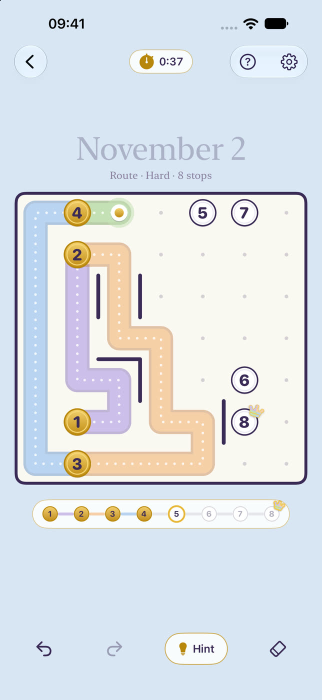
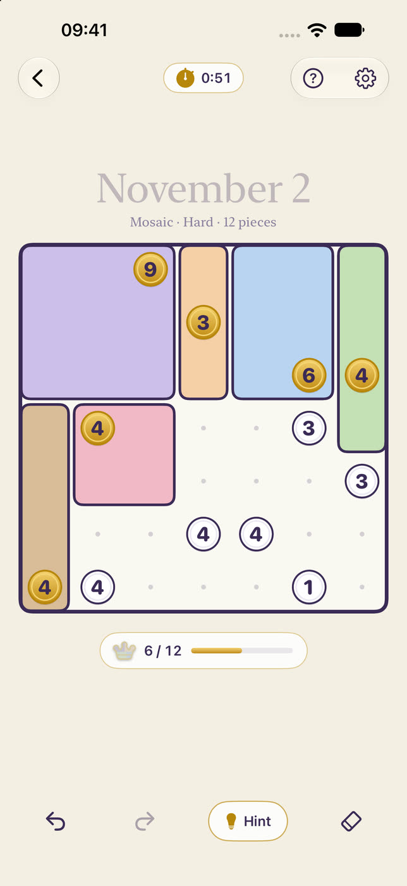
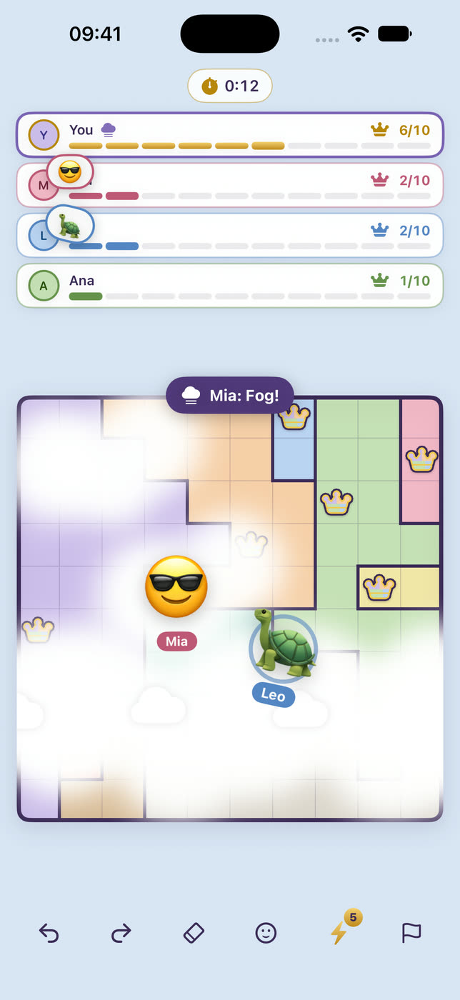
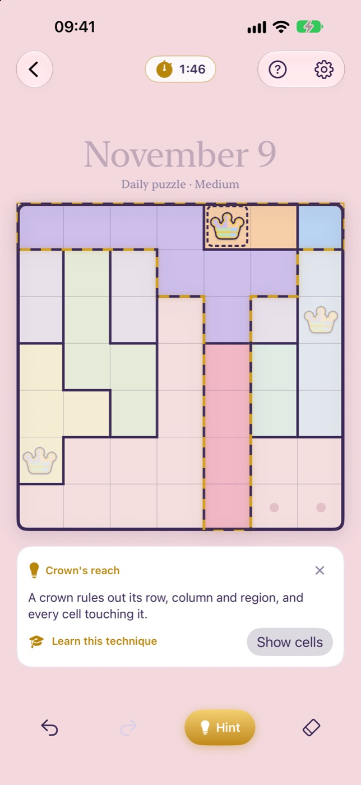
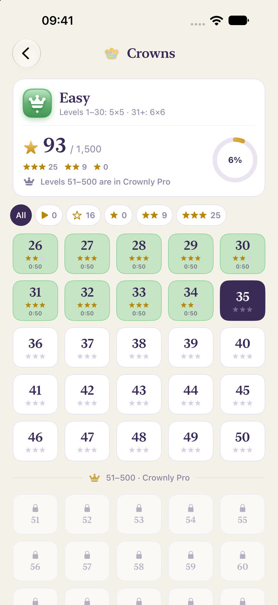
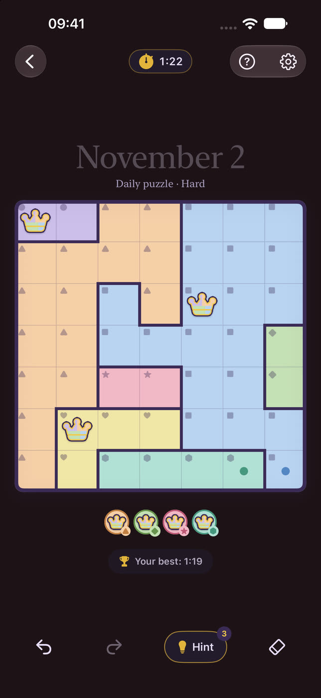

How to play Crowns
Three rules. Pure logic.
- 1One crown in every row and every column.
- 2One crown in every colored region.
- 3Crowns never touch, not even diagonally.
Tap once for a dot, twice for a crown, or drag to mark many cells. Every puzzle has exactly one solution, so you never have to guess.
A daily ritual
Three new puzzles. Every day. For everyone.
A daily Crowns, Route and Mosaic puzzle, the same for the whole world, plus a Hard Daily in every game. Solve any one to keep your streak, all three for a Full Day.

Route
One line through every cell.
Draw a single path that visits the numbered stops in order and passes through every cell exactly once, without crossing a wall.

Mosaic
Split the grid into rectangles.
Every piece holds exactly one number, and the number is its size. Drag from corner to corner and watch the mosaic come together.

Live duels
Race your friends on the same board.
Share a room code and race 2 to 4 friends live on the same Crowns board, with emoji and playful surprises. Or practice against bots any time.

Hints that teach
Stuck? Hints don't spoil.
A built-in solver finds the next logical step and explains why it works, in plain words. Ask once to see the idea, again to see the cells.

6,500 levels
From your first crown to Expert.
Easy to Expert in every game, up to 10×10, plus Double Crowns: two crowns in every row, column and region. Solve without hints and beat the clock for three stars.

Made for everyone
Color is never required.
Color-blind mode adds a symbol to every region and bolder borders. Dark mode, larger text, VoiceOver and Reduce Motion are fully supported.
Fair by design.
The daily puzzles are always free. No ads in the middle of a game, no tracking, works offline. One optional, one-time Crownly Pro purchase unlocks every level, unlimited hints and duels, and the puzzle archive.
Guides
Support
Found a bug, have an idea or a question? Write to us at hyapps@outlook.com. In the app you can also use Settings → Send feedback, which adds your app version and device for us.
When do the daily puzzles change?
New daily puzzles appear every day at 07:00 UTC, at the same moment for everyone in the world.
How do duels work?
Open Duel, create a room and share its code. 2 to 4 friends race live on the same Crowns board; the first to solve it wins. You can also practice against bots without an internet connection.
Will I lose my progress if I change phones?
With iCloud sync turned on (Settings → General), your solved puzzles, stars and streak sync to your other devices through your private iCloud account. Without iCloud, progress is stored only on this device and deleting the app deletes it.
What does Crownly Pro add?
All 6,500 levels (the first 50 of every difficulty are free), unlimited hints and duels, the archive of every past daily puzzle and 3 streak freezes a month instead of 1. It is a one-time purchase, shared with your Family Sharing group. To restore it, open Settings → Crownly Pro → Restore purchases.
I missed a day. Is my streak gone?
Not always. A streak freeze is used automatically when you miss a day (one per month, three with Pro).
Some colors look alike to me.
Turn on Color-blind mode in Settings → Game. Every region gets its own symbol and the borders get bolder, so you never need to tell colors apart. You can also try the High contrast board palette.
More from HY Apps